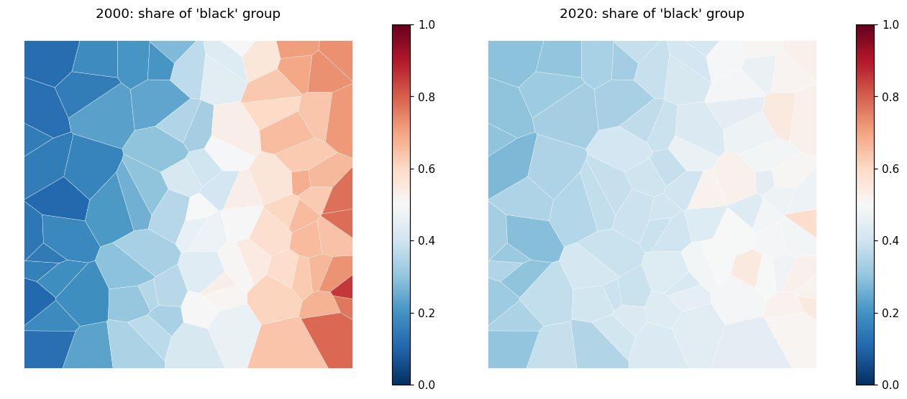
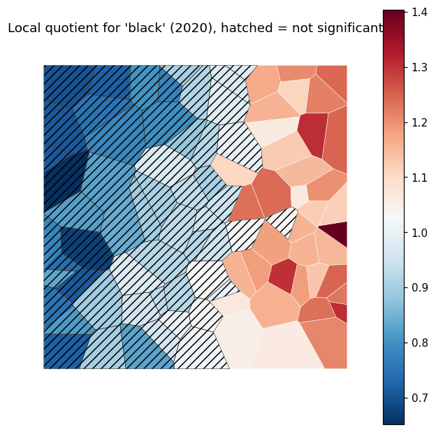
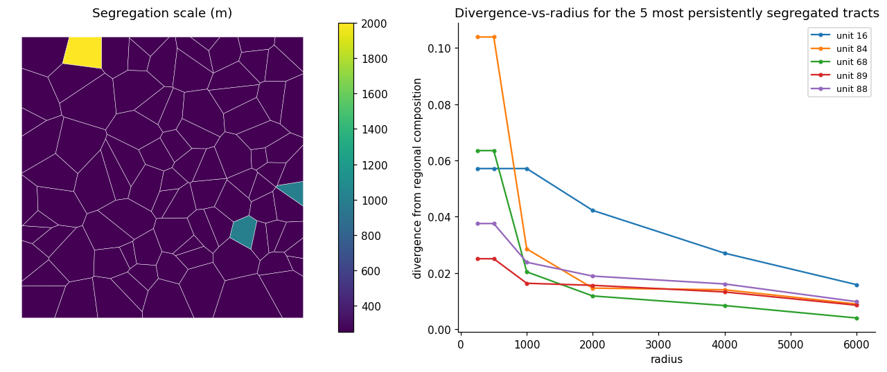

Residential segregation is the degree to which population groups live apart from each other across a set of spatial units (census tracts, blocks, grid cells). It is measured, not assumed: the same city can look integrated or segregated depending on which group pairing, which scale, and which period you ask about, so a segregation toolkit needs more than one number. It measures how unevenly population groups (race/ethnicity, income, age) are spread across places, and whether that pattern differs between places or changes between years.
Eight notebooks measure how unevenly groups share the Buffalo metro area, then ask where, at what scale, and whether a change between census years is real.
Segregation Analysis. This notebook. The five dimensions of segregation, and a first set of indices on a multi-year tract layer.
Single-group segregation indices. Evenness and exposure for one group against the rest, including dissimilarity, on Buffalo tracts.
Multigroup segregation indices. Metro diversity, Theil’s H, multigroup dissimilarity, and a pairwise matrix for white, Black, Hispanic, and Asian residents.
Local measures of segregation. A value per tract: location quotients, local diversity, each tract’s share of dissimilarity, and which local values beat chance.
Multiscale segregation profiles. How far a tract’s segregation extends as the neighbourhood radius grows, and a metro-wide profile.
Null models and simulation for segregation. Evenness, shuffled-tract, and spatially constrained simulations, and the baseline each one sets for an index.
Inference for segregation indices. Whether an index is larger than chance, whether it changed between two years, and how wide a spatial-block bootstrap interval is.
Segregation Over Time: Boundaries, Panels, and Decomposition. Tract boundaries from 2000 to 2020, a harmonized panel, and a split of the decline into spatial re-sorting and a changing group mix.
Library: geolattice.spatial_analysis.segregation
Overview
Segregation analysis measures how unevenly population groups (race/ethnicity, income, age) are spread across places, and whether that pattern differs between places or changes between years. The PySAL segregation package covers the full workflow: global indices, local maps, scale profiles, null models, significance tests, and decomposition of differences. All the notebooks use the Sacramento 2000 census tract data (403 tracts), except the KL walkthrough, which uses Cincinnati (457 units).
The core idea
Dimensions. Segregation is not one quantity. Massey and Denton (1988) described five dimensions, and most indices in the package measure one of them:
Aspatial vs spatial. Classic indices treat tracts as unconnected bins. That creates the checkerboard problem: a perfect checkerboard of all-Black and all-White tracts gets the same D as a city split into two halves, even though the lived experience is very different. Spatial indices fix this in one of two ways:
Spatially explicit indices include distance or adjacency in the original formula (Centralization, Clustering, Spatial Proximity).
Generalized (spatially implicit) indices, following Reardon and O’Sullivan, first smooth each unit’s population over its neighborhood, then compute the ordinary index on the smoothed data. The neighborhood can be defined by a kernel bandwidth, a libpysal.W weights object, or a pandana.Network of travel distance.
“Over time and space.” Space means comparing places, scales, and local patterns. Time means computing the same index for several census years and asking two questions: is the change real (inference), and why did it happen (decomposition)?
Single-group indices (segregation.singlegroup)
These measure one focal group against everyone else, for example Black vs. non-Black.
Key formulas, with group count \(x_i\) and total \(t_i\) in unit \(i\), regional group total \(X\), and regional total \(T\):
Dissimilarity: \(D = \tfrac12 \sum_i \left| \frac{x_i}{X} - \frac{t_i - x_i}{T - X} \right|\). This is the share of the group that would have to move for an even distribution.
Isolation: \(xPx = \sum_i \frac{x_i}{X}\cdot\frac{x_i}{t_i}\). Interaction is \(1 - xPx\) for two groups.
The usage pattern is the same for every index:
from segregation.singlegroup import Dissim, Ginid = Dissim(sacramento, group_pop_var="BLACK", total_pop_var="TOT_POP")d.statistic # 0.488d.data # data used in the computation
Results for Black residents in Sacramento:
Version
Gini
Aspatial
0.636
Generalized spatial, 2 km Euclidean kernel (distance=2000)
0.537
2 km network distance (network=net, decay='linear')
0.585
Smoothing lowers the index, because segregation between adjacent tracts partly cancels out. Network distance gives a higher value than straight-line distance, because people travel on roads, not “as the crow flies.” Barriers like freeways and rivers keep neighborhoods apart. batch_compute_singlegroup() returns all 27 single-group indices in one table.
Multi-group indices (segregation.multigroup)
These measure segregation among several groups at once (White, Black, Hispanic) instead of one group against the rest.
The most widely used is Theil’s information theory index \(H\):
Here \(E\) is regional entropy (diversity) and \(E_i\) is the entropy of unit \(i\). \(H = 0\) when every unit is as diverse as the region. \(H = 1\) when every unit holds only one group.
Results for the three groups in Sacramento:
Index
Value
MultiDissim
0.425
MultiInfoTheory (H)
0.180
MultiDissim, 2 km Euclidean
0.378
MultiDissim, 2 km network
0.400
The spatial and network logic is the same as for single-group indices. batch_compute_multigroup() returns 11 indices, including diversity, Simpson’s, and GlobalDistortion, which is linked to the KL approach in section 8.
Local measures (segregation.local)
Global indices give one number per region. Local measures give one value per tract, so you can map where segregation happens. With \(\pi_{im}\) = share of group \(m\) in unit \(i\):
Measure
Formula
Reading
Location Quotient
\(LQ_{im} = \dfrac{x_{im}/t_i}{X_m/T}\)
Greater than 1 means the group is over-represented relative to the region. Returns an n × M array, one column per group.
Local Diversity
\(-\sum_m \pi_{im}\ln\pi_{im}\)
Higher means more mixed.
Local Entropy
Diversity divided by \(\ln M\)
Same as diversity, scaled to 0-1. In Sacramento, 0.343 / ln 4 = 0.248.
Local Simpson Interaction
\(\sum_m \pi_{im}(1-\pi_{im})\)
Probability that two random residents belong to different groups.
Local Simpson Concentration
\(\sum_m \pi_{im}^2\)
Probability that they belong to the same group. It equals 1 - interaction.
Local Relative Centralization
Single-group, nearest-neighbor based
Ranges from -1 to +1. Shows whether the group is closer to each tract’s local center than the rest of the population.
Classes whose names start with Multi take a list of groups. The others take a single group and a total. These maps are the natural input for LISA or hot-spot analysis.
This approach comes from Reardon et al. (2008). You compute an index, widen the neighborhood radius, recompute, and repeat. The result is a curve of segregation against scale.
For Black residents in Sacramento, Gini falls from 0.636 at 0 m to 0.537 at 2 km and 0.413 at 5 km.
Reading a profile:
Steep early drop: segregation is micro-scale. Pockets disappear once you look a little wider.
Flat curve: segregation is macro-scale. Large contiguous areas stay homogeneous even at wide radii.
Network vs. Euclidean: the network-based D profile falls more slowly. Travel infrastructure keeps segregation in place at larger distances.
Any of the 23 generalized indices (single or multi-group) can be profiled. The functions batch_multiscalar_singlegroup and batch_multiscalar_multigroup compute them all. For time analysis, plotting profiles for 1990, 2000, and 2010 on one chart shows whether segregation is fading at fine scales while persisting at coarse ones.
Simulating random populations (null models)
A key point from Boisso et al. (1994) is that “no segregation” does not give an index of 0. Random allocation still produces some unevenness, especially for small groups. So you need a simulated reference distribution. The package offers three randomization schemes:
Function
What is randomized
What is preserved
What varies
simulate_evenness
Each resident in each unit is drawn as the focal group with probability equal to the regional share (6.8% for Black residents)
Unit totals
Group totals vary slightly (121,457 vs. 122,022)
simulate_systematic_randomization
Each group member is placed in a unit with probability equal to the unit’s share of total population
Group totals
Unit totals vary
simulate_person_permutation
Individuals are shuffled among units
Both group totals and unit totals
Neither
The notebook’s summary is: evenness includes group-level variation, systematic includes unit-level variation, and permutation includes neither. simulate_null(seg_class, sim_func) runs these in parallel to build the null distribution. For Sacramento, all three give similar distributions that are not centered on zero. The schemes can diverge when minority groups are very small or very unbalanced.
Single-value and comparative inference (segregation.inference)
Single-value test: is this place segregated at all?
SingleValueTest(index, null_approach=...) compares the observed index with a simulated null distribution.
Evenness null. Hispanic D = 0.322, while the null mean is about 0.016, so p ≈ 0 and segregation is real. This null fits evenness indices.
Bootstrap. This simulates the sampling distribution of D itself, then tests it against 0 or against the evenness null mean. Both give the same conclusion here.
Geographic permutation. This shuffles where whole tracts sit, keeping their contents. It is the right test for spatial indices. Relative Concentration = 0.126 with p = 0.54, so it is not significant. The Hispanic population is uneven across tracts, but not unusually concentrated in space.
even_permutation. This generates an evenness population first, then permutes it geographically.
The point is to match the null to the dimension you are measuring.
Two-value test: are two places or two years different?
TwoValueTest(index1, index2, null_approach=...) handles both space (City A vs. City B) and time (Year 1 vs. Year 2). The notebook splits Sacramento into west (D = 0.277) and east (D = 0.258):
random_label (Rey & Sastré-Gutiérrez, 2010) shuffles units between the two contexts and builds a distribution of differences. p = 0.43.
bootstrap (Davidson, 2009) bootstraps each index and runs a means test. p = 0.43. Use it only for aspatial indices: it ignores spatial autocorrelation, and resampling duplicates units, which breaks the geometry.
Conclusion: the 0.02 gap is not significant. For time comparisons, the same tract geography must be used in both years, which means harmonizing boundaries first (for example with PySAL’s geosnap).
Decomposition: why do two values differ?
DecomposeSegregation(index1, index2, counterfactual_approach=...) follows Rey et al., “Comparative Spatial Segregation Analytics.” It uses a Shapley decomposition to split the difference between two indices into two parts:
\[S_A - S_B = c_s + c_a\]
\(c_a\) (attribute component): the part due to different population composition, such as how large the group is and how its tract shares are distributed.
\(c_s\) (spatial component): the part due to how those compositions are arranged in space.
The method builds counterfactuals: City A’s spatial layout with City B’s composition distribution, matched by quantiles (CDFs), and the reverse. It then averages the effects. There are three counterfactual approaches: composition (default), share, and dual_composition.
Sacramento, Black Gini, west minus east:
Difference
\(c_s\)
\(c_a\)
Composition approach
-0.150
-0.004
-0.146
Share approach
-0.150
-0.048
-0.101
Relative Concentration
-0.074
+0.035
-0.108
Almost all of the Gini gap comes from attributes, not spatial arrangement. For the spatial index, the spatial component carries more weight and points the opposite way. Use .plot(plot_type="cdfs") or "maps" to see the counterfactuals.
For time analysis, this is the most useful tool. It tells you whether segregation rose because the group’s composition changed (growth, immigration) or because people sorted differently in space.
kl_divergence_profile: the Olteanu et al. (2019) multiscalar view
This is a different multiscalar method, based on Olteanu et al., “Segregation through the multiscalar lens,” PNAS. For every unit, it grows a neighborhood outward one nearest neighbor at a time and measures how far the accumulated population mix is from the city-wide mix, using Kullback-Leibler divergence:
Here \(q\) is the cumulative group proportions around the focal unit and \(r\) is the regional proportions.
Algorithm:
Compute centroids and a full pairwise distance matrix with pdist. The metric is configurable.
For each unit, sort all units by distance and take cumulative group counts.
Convert to proportions \(q\) and compute divergence from \(r\) using scipy.special.rel_entr. This function treats \(0\ln 0 = 0\), which is why it is used instead of kl_div.
Return a row for each step with four columns: observation, distance, divergence, population_covered.
The output is large: n² rows (457² = 208,849 for Cincinnati).
Reading the profile:
At distance 0, divergence is local segregation: how unlike the city that unit is.
Divergence always converges to 0 once the whole city is included.
How far you must go before divergence becomes small is the “segregation scale” for that location. Large distances mean the unit sits inside a big homogeneous area.
Taking .groupby('observation').first() gives a local divergence map.
The “invalid value in divide” warnings in the notebook come from units with zero population and are harmless.
Inputs can be a GeoDataFrame containing only count columns plus geometry, or separate populations and coordinates objects. Use raw counts, not percentages.
Putting it together for space and time
Harmonize geography across census years so units are comparable.
Global indices for each year, single and multi-group, aspatial and spatial (network if possible).
Single-value test for each year: is segregation above what random allocation gives?
Two-value test between Year 1 and Year 2, or between cities: is the change real?
Decomposition of the change: composition shift or spatial re-sorting?
Multiscalar or KL profiles for each year: did segregation shift between micro and macro scale?
Local maps (LQ, entropy, local KL) for each year: where did it intensify or ease?
This pipeline would fit well alongside your spatial causal package. Local segregation surfaces can serve as exposures or confounders in a spatial causal model of health outcomes.
geolattice.spatial_analysis.segregation is a lighter, faster, time-series-aware alternative to PySAL’s segregation package, built around three gaps in it:
Scale. PySAL’s spatial (KL-divergence) profile builds a dense n x n distance matrix and an n^2-row table – it runs out of memory well before a few thousand units. This module’s multiscale.compute_profile uses a scipy.spatial.cKDTree and never materializes either.
Time. PySAL only ever compares two values at a time. This module accepts a whole panel of years, harmonizes boundaries across them (areal or dasymetric interpolation), tests the resulting trend (Mann-Kendall), and chains the spatial-vs-composition decomposition across every consecutive pair of periods instead of just one.
Inference. PySAL’s bootstrap resamples individual units, which is only valid if neighboring units are independent – exactly what spatial autocorrelation violates. This module resamples whole spatial blocks instead, and adds permutation significance with false-discovery-rate correction for local (LISA-style) maps.
This notebook is a hands-on tour of the whole module on one synthetic city. Every single- and multi-group index it computes is checked in tests/test_segregation.py against PySAL’s own segregation package values, so the numbers below are not just internally consistent – they agree with the field’s existing reference implementation wherever the two overlap.
Setup and the synthetic study city
The data below (Data/03_spatial_analysis/data_segregation/make_data.py) is a fictional ~14 km x 14 km city with four population groups across three census years (2000, 2010, 2020) on one shared set of 92 Voronoi “tracts”, plus a fourth, older year (1990) deliberately built on a different, coarser set of 18 tract boundaries – the real-world problem every multi- decade segregation panel has, since census geography gets redrawn almost every decade. A built-up-intensity raster is also provided, for the dasymetric boundary-harmonization example later on.
The city’s demographic pattern is not random: it starts as a sharp east/west divide in 1990 and partially integrates by 2020, so every index, map, trend test, and decomposition below has a real, interpretable signal to recover.
Installation. This notebook needs installation option 2 (core plus spatial analysis): pip install "geolattice[analysis]". See “Installation options” in the GeoLattice README.
Code
# Display matplotlib figures inline in this Jupyter notebook.%matplotlib inline# Standard library imports for path setup and warning control.# Areal interpolation can warn on zero-area slivers; geolattice already silences the expected case.import warnings # silence noisy third-party warnings during demosfrom pathlib import Path # filesystem paths for locating sample data# Third-party GIS / plotting / tabular stack used throughout the notebook.import geopandas as gpd # GeoDataFrame I/O for tract panelsimport matplotlib.pyplot as plt # figure and axes creation for mapsimport numpy as np # array ops for shares and scale masksimport pandas as pd # tabular display of results# Hide UserWarnings so notebook output stays readable.warnings.filterwarnings("ignore", category=UserWarning) # run this analysis or plotting step# ===================================================================# Setup for the segregation overview notebook.# Import GeoLattice, point DATA at Data/03_spatial_analysis/data_segregation,# and import geolattice.spatial_analysis.segregation as seg.# ===================================================================# The installed package lives in src/; the repository root is its parent.import geolatticeROOT = Path(geolattice.__file__).resolve().parents[1]ifnot (ROOT /"Data").is_dir():raiseFileNotFoundError("Could not find the GeoLattice repository root.")# Synthetic multi-year tract data for the segregation chapter.DATA = ROOT /"Data"/"03_spatial_analysis"/"data_segregation"# define DATA# Segregation indices, locals, profiles, harmonisation, and inference helpers.from geolattice.spatial_analysis import segregation as segGROUPS = ["white", "black", "hispanic", "asian"] # race/ethnicity count columns# Compact figures with top/right spines removed for a cleaner look.plt.rcParams.update({"figure.dpi": 110, "axes.spines.top": False, "axes.spines.right": False}) # run this analysis or plotting stepprint("repo:", ROOT) # run this analysis or plotting stepprint("data:", DATA) # run this analysis or plotting stepprint("geopandas", gpd.__version__) # run this analysis or plotting step
# ===================================================================# Load the shared-boundary years plus coarse 1990 tracts, then map the# black population share in 2000 vs 2020 as a first look at the pattern.# ===================================================================# Three years that already share one boundary set.tracts = {year: gpd.read_file(DATA /f"tracts_{year}.geojson") for year in (2000, 2010, 2020)} # define tracts# 1990 uses coarser boundaries and needs harmonising before panel work.tracts_1990_coarse = gpd.read_file(DATA /"tracts_1990_coarse.geojson") # define tracts_1990_coarseprint( # run this analysis or plotting stepf"{len(tracts[2020])} tracts per year (2000/2010/2020); "# field in the summary rowf"{len(tracts_1990_coarse)} coarse tracts in 1990"# run this analysis or plotting step)print( # run this analysis or plotting step"total population by year:", # field in the summary row {y: int(g[GROUPS].sum().sum()) for y, g in tracts.items()}, # run this analysis or plotting step)# Side-by-side choropleths of the black share (the pattern later indices summarise).fig, axes = plt.subplots(1, 2, figsize=(12, 5)) # run this analysis or plotting stepfor ax, year inzip(axes, (2000, 2020)): # iterate paired sequences together g = tracts[year] # define g share = g["black"] / g[GROUPS].sum(axis=1) # tract share of the black group g.assign(_share=share).plot( # draw geometries or a series on the axes column="_share", cmap="RdBu_r", vmin=0, vmax=1, # define column legend=True, ax=ax, edgecolor="white", linewidth=0.2, # define legend ) ax.set_title(f"{year}: share of 'black' group") # set labels, title, or axis limits ax.set_axis_off() # run this analysis or plotting stepplt.tight_layout() # run this analysis or plotting stepplt.show() # run this analysis or plotting step
92 tracts per year (2000/2010/2020); 18 coarse tracts in 1990
total population by year: {2000: 275452, 2010: 314166, 2020: 329822}

Region-wide indices, with a spatial-block bootstrap confidence interval
seg.compute() is the single entry point: name an index, name the group columns, and optionally ask for a confidence interval. ci=True calls inference.spatial_block_bootstrap under the hood, which resamples whole spatial blocks of tracts together (so spatially correlated neighbors move together in each replicate) rather than resampling individual tracts as if they were independent – the assumption a plain unit-level bootstrap makes, and spatial autocorrelation violates.
Dissimilarity ("dissimilarity"): the share of either group that would have to move for every tract to match the city’s overall composition. 0 = no segregation, 1 = complete segregation.
Gini ("gini"): like dissimilarity, but weighted so larger tracts count more.
Theil’s H ("theil_h"): the multigroup information-theory index – how much of the city’s overall racial/ethnic diversity is “explained away” by which tract people live in, across all four groups at once (not just white/black).
Code
# ===================================================================# Region-wide indices for 2020 with spatial-block-bootstrap CIs.# n_blocks=8 keeps neighbouring tracts' dependence in the resampling.# ===================================================================# Dissimilarity and Gini for the white-black pair.for index_name, pair in [("dissimilarity", ("white", "black")), ("gini", ("white", "black"))]: # loop over group pairs result = seg.compute( # define result tracts[2020], index=index_name, # define index groups=list(pair), # define groups ci=True, # define ci n_boot=299, # bootstrap replicates n_blocks=8, # spatial blocks for dependence-preserving CI seed=0, # define seed )print(result.summary()) # run this analysis or plotting step# Theil's H uses all four groups at once, not just one pair.theil_result = seg.compute( # define theil_result tracts[2020], index="theil_h", # define index groups=GROUPS, # define groups ci=True, # define ci n_boot=299, # define n_boot n_blocks=8, # define n_blocks seed=0, # define seed)print(theil_result.summary()) # run this analysis or plotting step
dissimilarity(white, black) = 0.1383 (95% CI [0.0866, 0.1749])
gini(white, black) = 0.1881 (95% CI [0.1247, 0.2213])
theil_h(white, black, hispanic, asian) = 0.0187 (95% CI [0.0117, 0.0238])
Local measures and permutation significance (a LISA-style map)
A single region-wide number hides where segregation is concentrated. local_quotient computes each tract’s location quotient for one group: LQ = (tract's share of the group) / (city-wide share of the group). LQ > 1 means that group is over-represented in that tract.
But some of that variation is just noise from small tract populations. local_significance tests every tract’s LQ against an “evenness” null (each tract’s population redrawn from the city-wide proportions, keeping its own total fixed) with 999 permutations, then applies Benjamini-Hochberg false-discovery-rate correction across all 92 simultaneous tests – the same multiple-comparisons problem a local Moran’s I cluster map has. Only tracts whose LQ survives that correction are shown as significant.
Code
# ===================================================================# Local quotient for 'black' with FDR-corrected permutation significance,# then map LQ and hatch tracts that fail FDR 0.05.# ===================================================================# Permute each tract's 4-group composition under the city proportions.sig = seg.local_significance( # define sig tracts[2020], GROUPS, seg.local_quotient, group="black", # define group permutations=999, # define permutations alpha=0.05, # define alpha seed=0, # define seed)print(sig.describe()) # run this analysis or plotting stepprint(f"\n{sig.significant_fdr.sum()} of {len(sig)} tracts are significant at FDR 0.05") # run this analysis or plotting step# Colour by LQ; hatch tracts that did not survive FDR correction.ax = seg.plot_local_map( # axes handle for drawing tracts[2020], sig["statistic"], significant=sig["significant_fdr"], # define significant title="Local quotient for 'black' (2020), hatched = not significant", # define title cmap="RdBu_r", # define cmap)plt.show() # run this analysis or plotting step
statistic p_value
count 92.000000 92.000000
mean 0.998677 0.523891
std 0.177997 0.480229
min 0.651717 0.001000
25% 0.893910 0.001000
50% 0.982837 0.780500
75% 1.157353 1.000000
max 1.403351 1.000000
37 of 92 tracts are significant at FDR 0.05

The multiscale segregation profile (fast, KD-tree based)
How far does a tract’s segregation reach before it blends into the city’s overall composition? multiscale.compute_profile pools each tract’s composition within growing radii and measures its KL divergence from the city-wide composition at each one – Reardon et al.’s “spatial segregation profile” idea, but computed by querying a scipy.spatial.cKDTree for each tract’s own (typically small) neighbor list, never building the dense n x n distance matrix PySAL’s own implementation does. That is the difference between this running in milliseconds on 92 tracts (and staying linear-ish out to thousands) and running out of memory.
Three compact, mappable outputs come out of the profile instead of a raw curve per tract:
segregation_scale: the radius at which a tract’s divergence first drops below a threshold (small = a short-range, very local pattern; large/inf = persists broadly).
auc: area under the divergence-vs-radius curve (one number for “how segregated, integrated over scale”).
distortion: the fraction of a tract’s own-unit divergence still left at the largest radius queried (near 0 = decays away quickly with pooling; near 1 = barely decays over the measured range).
Code
# ===================================================================# Multiscale KL divergence profiles and segregation-scale map.# Radii span from a single tract (~250 m) to most of the city (~6000 m).# ===================================================================profile = seg.compute_profile( # define profile tracts[2020], GROUPS, radii=[250, 500, 1000, 2000, 4000, 6000], # metres divergence="kl", # Reardon KL divergence scale_threshold=0.05, # converge when divergence falls below this)# Cap non-finite scales at the largest radius for mapping.tracts[2020]["segregation_scale"] = np.where( # assign a derived column or cell np.isfinite(profile.segregation_scale), # run this analysis or plotting step profile.segregation_scale,6000.0,)tracts[2020]["profile_auc"] = profile.auc # area under the divergence-radius curvefig, axes = plt.subplots(1, 2, figsize=(12, 5)) # run this analysis or plotting stepseg.plot_local_map( # run this analysis or plotting step tracts[2020], tracts[2020]["segregation_scale"], ax=axes[0], title="Segregation scale (m)", cmap="viridis", # define title)seg.plot_profile(profile, ax=axes[1]) # highlight the most persistent tractsaxes[1].set_title("Divergence-vs-radius for the 5 most persistently segregated tracts") # set labels, title, or axis limitsplt.tight_layout() # run this analysis or plotting stepplt.show() # run this analysis or plotting step

Spatial neighborhoods: pooling composition across nearby tracts
A tract’s own population can be small enough that its composition is noisy. Pooling in nearby tracts first – building a “generalized spatial” version of any local measure – is what the neighborhoods module is for. kernel_weights gives every tract within a bandwidth a smooth (Gaussian) or hard-cutoff weight; knn_weights instead uses libpysal’s k-nearest-neighbor graph. Pass either into any local function’s neighborhood= argument.
Code
# ===================================================================# Compare unpooled LQ with LQ pooled over a ~1200 m Gaussian kernel.# knn_weights is built as the alternative neighbourhood constructor.# ===================================================================kernel_nb = seg.kernel_weights(tracts[2020], bandwidth=1200, kernel="gaussian") # define kernel_nbknn_nb = seg.knn_weights(tracts[2020], k=5) # k-nearest tracts alternativelq_unpooled = seg.local_quotient(tracts[2020], GROUPS, "black") # own tract onlylq_pooled = seg.local_quotient(tracts[2020], GROUPS, "black", neighborhood=kernel_nb) # define lq_pooledprint(f"std(LQ) unpooled: {lq_unpooled.std():.3f} std(LQ) kernel-pooled: {lq_pooled.std():.3f}") # run this analysis or plotting stepfig, axes = plt.subplots(1, 2, figsize=(12, 5)) # run this analysis or plotting stepseg.plot_local_map(tracts[2020], lq_unpooled, ax=axes[0], title="LQ, unpooled (own tract only)") # run this analysis or plotting stepseg.plot_local_map(tracts[2020], lq_pooled, ax=axes[1], title="LQ, pooled over a 1200 m Gaussian kernel") # run this analysis or plotting stepplt.tight_layout() # run this analysis or plotting stepplt.show() # run this analysis or plotting step_ = knn_nb # constructed above to show the alternative; not plotted separately
1990’s 18 coarse tracts do not line up with the 92 tracts used from 2000 onward – exactly the boundary-redrawing problem every real multi-decade segregation panel runs into. data.areal_interpolate splits each 1990 tract’s counts across the 2000-vintage tracts it overlaps, in proportion to overlap area; data.dasymetric_interpolate instead weights by a raster’s mass inside each overlap piece (here, a synthetic built-up- intensity grid), so population lands preferentially on the land that could plausibly hold it rather than being spread uniformly across a large tract’s open space too.
Code
# ===================================================================# Harmonise coarse 1990 tracts onto the 2000 geography two ways:# areal (overlap area) vs dasymetric (built-up intensity weights).# ===================================================================# Area-weighted split of 1990 group counts onto 2000 tracts.harmonized_areal = seg.areal_interpolate(tracts_1990_coarse, tracts[2000], GROUPS) # define harmonized_areal# Same split, but weighted by built-up intensity inside each overlap.harmonized_dasymetric = seg.dasymetric_interpolate( # define harmonized_dasymetric tracts_1990_coarse, tracts[2000], GROUPS, raster_path=DATA /"builtup_intensity.tif", # define raster_path)# Total population is conserved; compare D under each method.print(f"Coarse 1990 D(white, black): {seg.dissimilarity(tracts_1990_coarse, ['white', 'black']):.3f}") # run this analysis or plotting stepprint(f"Harmonized (areal) D(white, black): {seg.dissimilarity(harmonized_areal, ['white', 'black']):.3f}") # run this analysis or plotting stepprint(f"Harmonized (dasymetric) D(white, black): {seg.dissimilarity(harmonized_dasymetric, ['white', 'black']):.3f}") # run this analysis or plotting stepprint( # run this analysis or plotting stepf"\nPopulation conserved? coarse={tracts_1990_coarse[GROUPS].sum().sum():.0f} "# run this analysis or plotting stepf"areal={harmonized_areal[GROUPS].sum().sum():.0f} "# run this analysis or plotting stepf"dasymetric={harmonized_dasymetric[GROUPS].sum().sum():.0f}"# run this analysis or plotting step)
A full four-period panel: trend test and decomposition
With 1990 harmonized onto the same tracts as 2000/2010/2020, all four years can be analyzed as one panel. temporal.trend computes an index for every period and runs a Mann-Kendall trend test across them (non-parametric, appropriate for a handful of census years rather than assuming a linear, normally-distributed trend).
decomposition.chain_decomposition then splits the change between every consecutive pair of periods into a spatial component (people’s arrangement across tracts changing) and a composition component (the city’s overall group mix changing), using a two-player Shapley value that is exactly additive by construction – the two components always sum to the observed change, which tests/test_segregation.py checks directly.
Code
# ===================================================================# Build a consistent panel, test the Mann-Kendall trend in D, and chain# spatial-vs-composition decompositions across consecutive periods.# ===================================================================# Harmonized 1990 plus the three shared-boundary years.panel_gdfs = { # define panel_gdfs1990: harmonized_areal,2000: tracts[2000],2010: tracts[2010],2020: tracts[2020],}# Mann-Kendall trend on dissimilarity(white, black) across the panel.trend_result = seg.trend(panel_gdfs, ["white", "black"], seg.dissimilarity) # define trend_resultprint(trend_result["panel"]) # run this analysis or plotting stepprint( # run this analysis or plotting stepf"\ntrend: {trend_result['trend']} (p={trend_result['p_value']:.4f}, "# run this analysis or plotting stepf"Sen slope={trend_result['sen_slope']:.5f} per period)")ax = seg.plot_trend(trend_result["panel"], trend_result=trend_result) # axes handle for drawingax.set_title("Dissimilarity(white, black) across the panel") # set labels, title, or axis limitsplt.show() # run this analysis or plotting step# Spatial vs composition change for every consecutive pair of years.chain = seg.chain_decomposition(panel_gdfs, ["white", "black"]) # define chainprint(chain[["period_from", "period_to", "total_change", "spatial_component", "composition_component"]]) # run this analysis or plotting stepax2 = seg.plot_decomposition(chain) # axes handle for drawingplt.show() # run this analysis or plotting step
period statistic
0 1990 0.401825
1 2000 0.386719
2 2010 0.243238
3 2020 0.138350
trend: decreasing (p=0.0894, Sen slope=-0.00964 per period)
Exporting local segregation as a causal-package exposure variable
report.export_for_causal turns any local measure into a tidy, geometry-free table keyed by unit id – the shape geolattice.spatial_analysis.spatialcausal or PyCausalML’s cross-sectional and panel estimators expect for an exposure or confounder column. Merge it onto an outcome dataset (school performance, health outcomes, …) by tract id to use measured segregation as a covariate rather than recomputing it inside a causal pipeline.
Code
# ===================================================================# Export the 2020 black LQ (same values as the significance map) as a# tidy exposure table for downstream causal / regression workflows.# ===================================================================exposure_table = seg.export_for_causal( # define exposure_table tracts[2020], sig["statistic"], # reuse the significance test's LQ column id_col="tract_id", # define id_col name="black_lq_2020", # index name or scenario label)exposure_table.head() # run this analysis or plotting step
tract_id
black_lq_2020
0
T000
0.712410
1
T001
0.779883
2
T002
0.651717
3
T003
0.829910
4
T004
0.702614
Summary
Region-wide indices (indices / report.compute) summarize a city in one number per group pairing, with a spatially-aware bootstrap confidence interval.
Local measures (local) and FDR-corrected permutation significance turn that one number into a LISA-style map of where segregation is concentrated.
The multiscale profile (multiscale) answers how far that segregation reaches, using a KD-tree instead of a dense pairwise-distance table – the specific scaling limit that motivated rewriting this instead of calling PySAL directly.
neighborhoods, data (boundary harmonization), temporal (panels and trend tests), and decomposition (chained, exactly-additive spatial-vs-composition splits) extend every one of those ideas across space, across boundary changes, and across time – the three gaps a two-values-at-a-time, unit-level-bootstrap tool cannot close.
report.export_for_causal is the hook back out to geolattice.spatial_analysis.spatialcausal and PyCausalML: a measured segregation surface, ready to use as an exposure or confounder rather than an assumption.